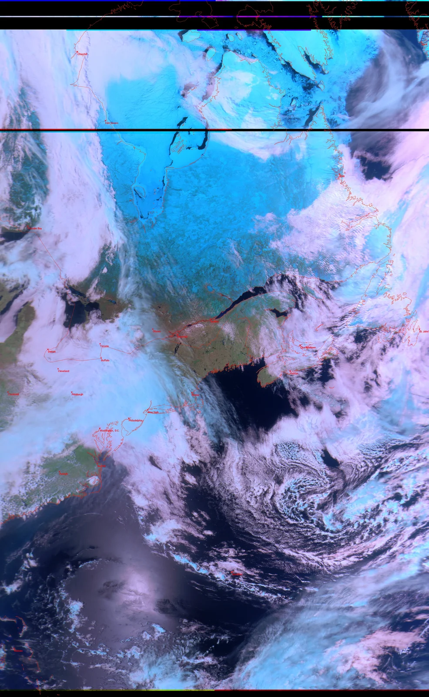
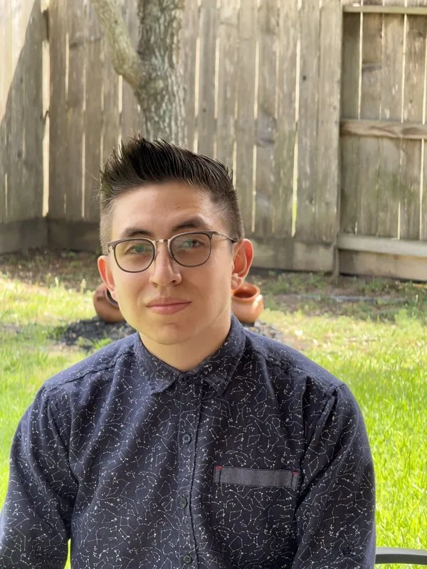
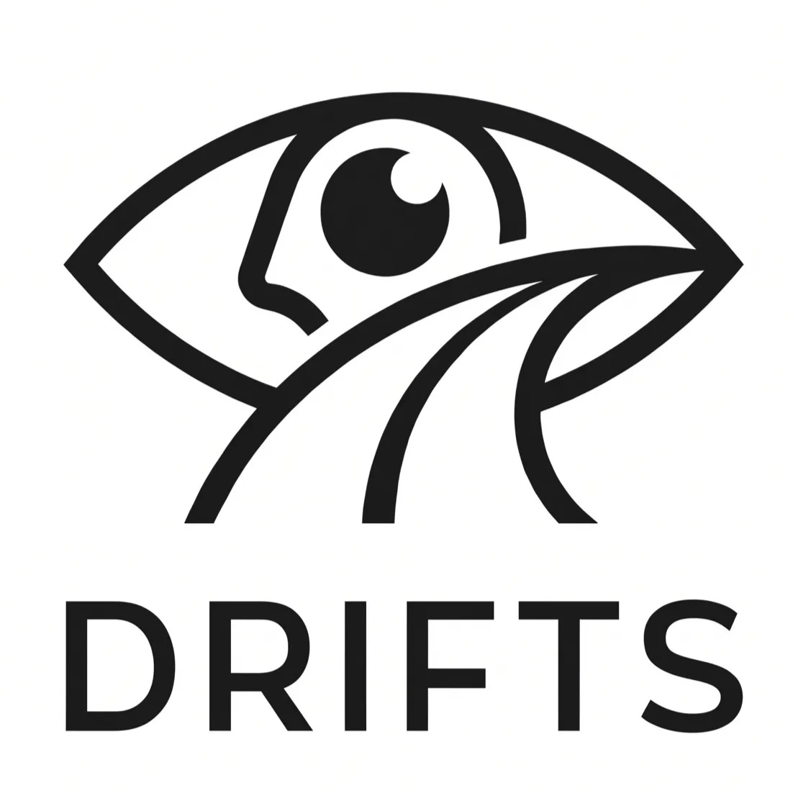

RF & Satellite DSP
01 / 10
I build where hardware meets software.
Embedded Systems / FPGA & Digital Logic / RF & SDR / Edge AI


A sensor-gated driver drowsiness monitor that keeps the camera asleep until the car tells it something is wrong.
Always-on face tracking drains batteries and feels invasive. DRIFTS flips the order: cheap phone sensors watch how the vehicle moves, and only when driving turns irregular does the vision stage wake up to check the driver's face. A Bluetooth module then handles the alarm with a buzzer and vibration motors.
It's interactive. Go ahead, poke it.
Computer Engineering Student
I like the moment a circuit, a few hundred lines of firmware and a sensor start agreeing with each other. That's where I spend most of my time: embedded systems, digital logic and the low-level software that makes hardware useful.
I've written PID loops for an ARM Cortex-M4, described timing circuits in Verilog, pulled weather imagery out of a satellite downlink with an SDR, trained imitation-learning policies for a robot arm, and spent the summer of 2026 keeping World Cup broadcast feeds alive. I'm now looking for full-time engineering roles where I can do more of that on real products.
Broadcast and network infrastructure support for zero-downtime feed distribution to international media rights holders during the 2026 World Cup. Worked inside the Center Interconnection Room (CIR) and Technical Operations Centre (TOC), managing the physical fiber plant, signal handoffs and uplink verification to keep live stadium feeds on air for global broadcast partners.
Pick any project from the reel to see it up close.

RF & Satellite DSPNothing in this category yet. That's a hint about what I'm building next.
Four small games, each built on something I engineered for real.
Click to start
or press Space
On the FPGA, an LFSR picks the random hold, the 50 MHz clock is divided into a 1 ms counter, and a BCD converter drives the 7-segment displays.
On the real robot, a TIVA LaunchPad reads an IMU over I²C and runs this same kind of PID loop, driving the motors with PWM.
These are the building blocks behind the FPGA reaction timer: on an FPGA, each gate becomes a lookup table (LUT) configured from Verilog.
On the real ground station, Gpredict calculated this Doppler correction from orbital data (TLEs) and steered the RTL-SDR automatically.
Click a highlighted skill to jump to the work that uses it.
I'm looking for full-time roles in embedded, hardware or edge-AI engineering. The fastest way to reach me is email.
Role: TOC/CIR Assistant | Organization: FIFA – Host Broadcast Services (HBS)
Timeline: June 2026 – July 2026 • Houston, Texas
Overview: Worked as an operations specialist inside the Center Interconnection Room (CIR) and Technical Operations Centre (TOC), managing fiber optic infrastructure, signal handoffs and uplink verification to keep live stadium feeds on air for global broadcast partners.
Technical Responsibilities & Operations:
What this is: A simulation of the DRIFTS vision stage, the part that only runs after the phone's motion sensors flag irregular driving. It visualizes driver drowsiness and attention telemetry from a lightweight MobileNetV2-based model, the kind of network small enough to run on a phone or an edge board.
Why it matters: Keeping the camera and the neural network gated behind cheap sensor checks is what makes all-day driver monitoring practical on battery power.
A satellite in low Earth orbit moves fast enough that the frequency you receive drifts: higher as it approaches, lower as it recedes from the nominal 137.900 MHz downlink. Drag the slider to move the satellite and watch the wavefronts compress and stretch, along with the S-curve frequency response.